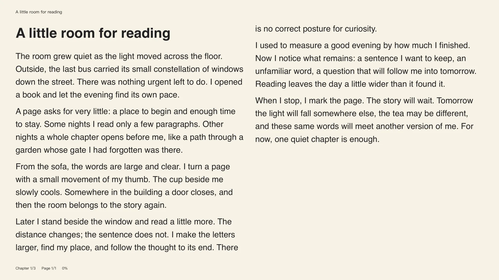
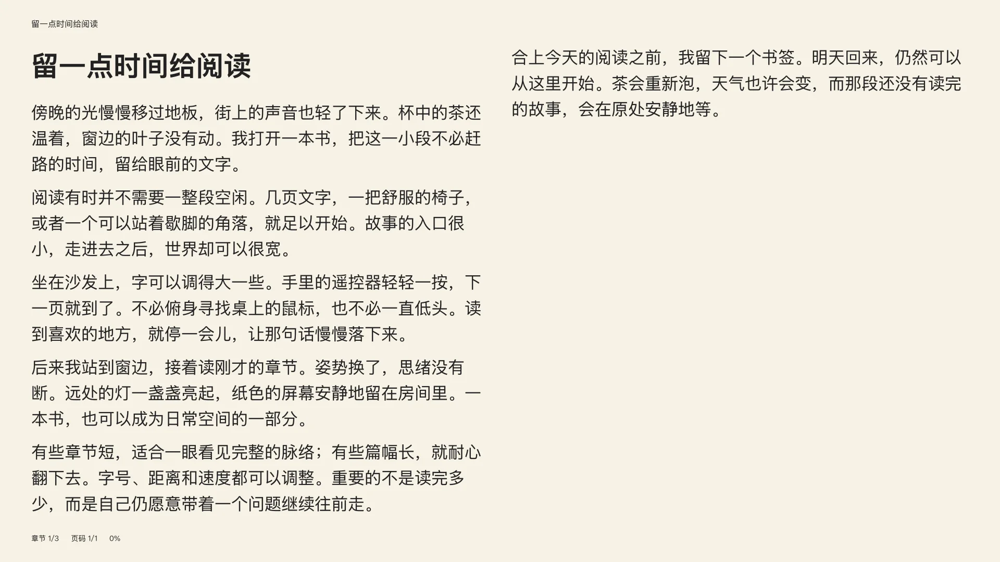

A personal library你的私人书库
Your library,
always with you.
你的书库，
与你随行。
Open and organize your own EPUB and PDF books on Mac. On Apple TV, give the page room to breathe and turn it with the remote.
在 Mac 上打开、整理自己的 EPUB 和 PDF。在 Apple TV 的大屏幕上，用遥控器轻轻翻过一页。


01 / Apple TV · Reading01 / Apple TV · 大屏阅读
Follow the idea.
Keep the context.
一眼多读一些，
思路少断一些。
Spread the page across one, two or three columns. A suitable short chapter can fit on a single screen, keeping the beginning and the end together. Choose the text size that suits your distance from the display.
用一栏、两栏或三栏展开正文。长度合适的短章节，可以在一屏完整呈现，前后的内容更容易相互对照。根据观看距离调整字号，让大屏真正服务于阅读。
How much fits depends on chapter length, font size, spacing and display orientation. Long chapters continue naturally over multiple pages.
每屏可容纳的内容取决于章节长度、字号、行距和屏幕方向；较长章节仍会正常分页。
02 / Portrait reading02 / 竖屏阅读
Turn the screen.
Open a bigger book.
把屏幕转过来，
就是一本大号的书。
A physically rotated monitor becomes one generous portrait page. Switch between landscape and your preferred portrait direction with the remote, while keeping your place.
将显示器物理旋转后，正文以完整的竖向单页展开。用遥控器快捷切换横屏与常用竖屏方向，重排后继续留在原来的阅读位置。
- Landscape, clockwise portrait or counterclockwise portrait横屏、顺时针竖屏、逆时针竖屏
- Text sizes from 16 output pixels, with a near-reading preset字号低至 16 输出像素，另有近距离阅读预设
- Preview a direction and confirm, or let it safely revert切换先预览，确认保留或自动恢复
Portrait requires a display that can be physically rotated. Page illustration uses original text.
竖屏需要能够物理旋转的显示器。上方为原创文字排版示意。
03 / Remote controls03 / 遥控器操作
Seated or standing.
Near or far.
坐着读，站着读。
远看近看，都自在。
Keep the Apple TV remote in hand and change position whenever you like. Turn pages while seated or standing, without reaching for a keyboard or mouse on a desk. Read up close or from farther away, adjusting the text size with the remote to suit your distance. BookAlong brings that freedom to your own books, with clear typography and quiet pages.
Apple TV 遥控器握在手里，想换个姿势就换个姿势。坐着或站着，都能随手翻页，不必伸手去够桌上的键盘和鼠标。远看、近看都可以，用遥控器调整字号，让文字大小适合你的观看距离。BookAlong 用清晰的文字、干净的页面，让你自在地阅读自己的书。
A page at your fingertips
随手翻页
Press Left or Right, or swipe on the remote to turn pages. Page turns stay quiet, with no control hints appearing over the text.
遥控器上轻按左右方向键，或左右滑动，就能翻页。翻页时不弹出操作提示，让注意力留在文字上。
Your kind of page
读成喜欢的样子
Read closer or farther away. Adjust text size with the remote to suit your distance, then choose spacing, margins and theme. Reflow keeps your reading position.
近看时调小字号，远看时放大文字，遥控器随手就能调整。还可选择行距、页边距与主题，重排保留阅读位置。
Find your next thought
快速找到，随时继续
Search titles and authors in a grid or list. Open contents, add bookmarks and continue where you left off.
网格或列表管理书库，按书名和作者搜索；用目录、书签与继续阅读回到想读的位置。
04 / Your own books04 / 自己的书
Bring your books to the big screen.
把自己的书带上大屏。
Read DRM-free EPUB, PDF and supported image-based EPUB comics. Reflow the text in an EPUB, or zoom in and pan across a PDF or comic page.
阅读无 DRM 的 EPUB、PDF 和兼容的图片型 EPUB 漫画。EPUB 正文可重排，PDF 和漫画可放大、移动页面。
Open local upload on Apple TV, then scan the code or open the address on a phone or Mac on the same network. Choose your downloaded files and start reading on the TV.
在 Apple TV 打开本地上传，用同一网络下的手机扫码，或在 Mac 上打开电视显示的网址。选择已下载的文件，就能在电视上阅读。
Read the import guide →查看导入说明 →05 / Mac · Library and reader05 / Mac · 书库与阅读
Open a book.
Make it part of your library.
打开一本，
收好一本。
Open an EPUB or PDF from Finder, or drop it into BookAlong. The book is added to your library as it opens, and your original file stays where it is.
从 Finder 打开 EPUB 或 PDF，或把文件拖进随阅。书籍打开时自动入库，原文件仍留在原处。
See the Mac guide →查看 Mac 使用说明 →- Open and read打开就能读Return to saved reading positions and bookmarks.从上次读到的位置或保存的书签继续。
- Organize with collections用集合整理Put a book in several collections with a single library copy.同一本书可以加入多个集合，书库只保留一份副本。
- Make the page yours按习惯排版Adjust type, spacing and themes, or settle into full-screen reading.调整字体、间距与主题，也可以切到全屏专心阅读。
Availability各端进度
Where BookAlong stands today.
随阅走到哪一步了？
- Apple TV
- Internal TestFlight testing on tvOS 17 or later. Public release is pending.
- 已进入 TestFlight 内测，支持 tvOS 17 或更高版本。正式版待发布。
- Mac
- Local library and reader tested on Apple silicon. Requires macOS 14 or later. Public release is pending.
- 本地书库和阅读功能已在 Apple 芯片 Mac 上验证，要求 macOS 14 或更高版本。正式版待发布。
- iPhone / iPad
- Planned.
- 规划中。
The Mac test build has restored a book, its reading position and a bookmark from iCloud. We are still verifying that reading can continue between Mac and Apple TV.
Mac 测试版已验证可从 iCloud 恢复书籍、阅读位置和书签。Mac 与 Apple TV 之间的接续阅读仍待实机验证。
Updated . The planned Apple TV release is a one-time purchase with no subscription. Local pricing will appear on the App Store when it is released.
更新。Apple TV 正式版计划一次买断，无订阅，价格以上架后的当地 App Store 为准。